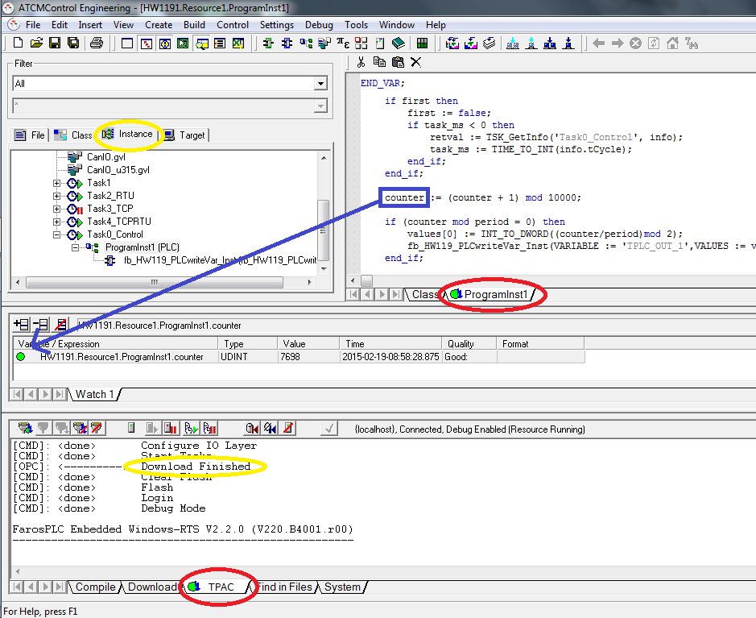

Am Ende des “Download” der Anwendung und bei Wiederherstellung der Verbindung wird automatisch der “Debug”-Modus aktiviert.
Im Debug-Modus erscheint eine zusätzliche Registerkarte für die auf dem Ziel laufenden Programme(siehen Sie rote Kreise) und in der Registerkarte “Instance” sehen Sie den Status der Aufgaben ((aktiv, gestoppt, …).
Die Zielkreise sind bei aktiver Verbindung in “grün” und bei nicht aktiver Verbindung in “gelb” eingefärbt.
Sie können die Aktualisierung der Variablen des laufenden Programms aktivieren, indem Sie die Variable in das “Überwachungsfenster” ziehen, wie mit dem blauen Pfeil in der Abbildung oder aus dem Menü “View → Watch”.
Die Aktualisierung der Variablen erfolgt auch “on the fly” indem Sie den Mauszeiger über die Variable selbst führen (Sie können sie auch über das Popup → Set Watchpoint durch Drücken von F8 einstellen).
Alle verschiedenen Debugging-Befehle befinden sich unter dem Menü “Debug”.
ACHTUNG: Es ist nicht möglich, eine Funktion zu debuggen, während dies bei einem Funktionsblock möglich ist.
